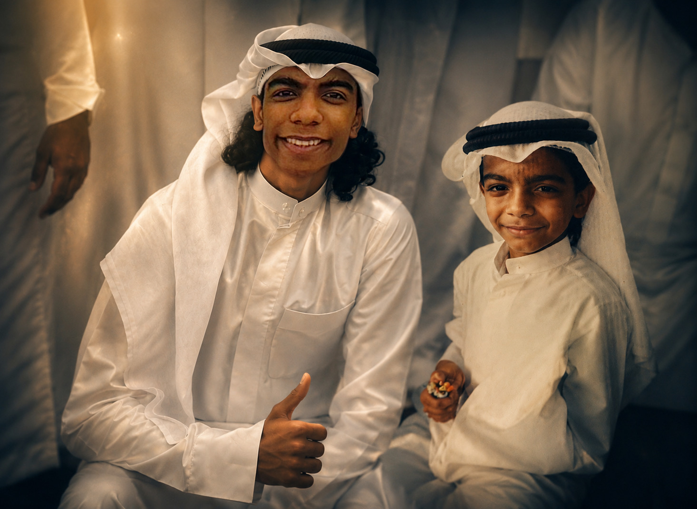

المشاركة الفعالة في تنظيم المبادرات المجتمعية والوطنية تحت قيادة الوالد (قائد الفريق).
عضو مساهم في تقديم الأنشطة التطوعية والخدمات المجتمعية.
بدايات العمل التطوعي والمشاركة في الحملات التوعوية والوطنية المختلفة.
قريباً.. سيتم إضافة الأعمال الجديدة، التغطيات الحصرية والمشاركات القادمة هنا.
جاري تحميل نصيحة ملهمة لك...